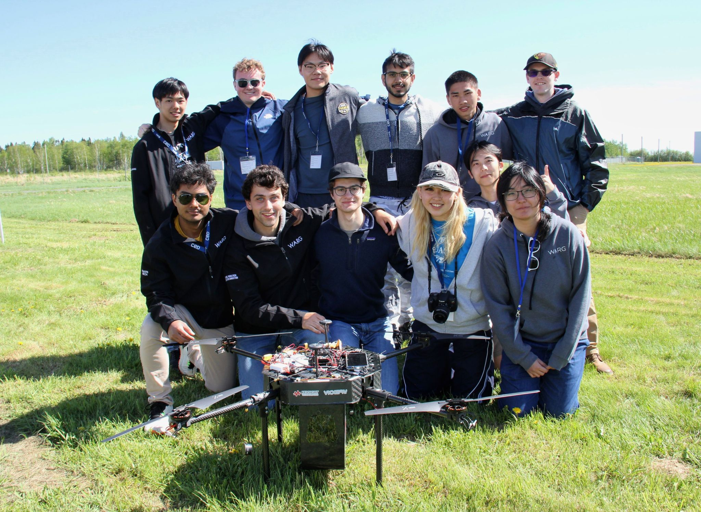
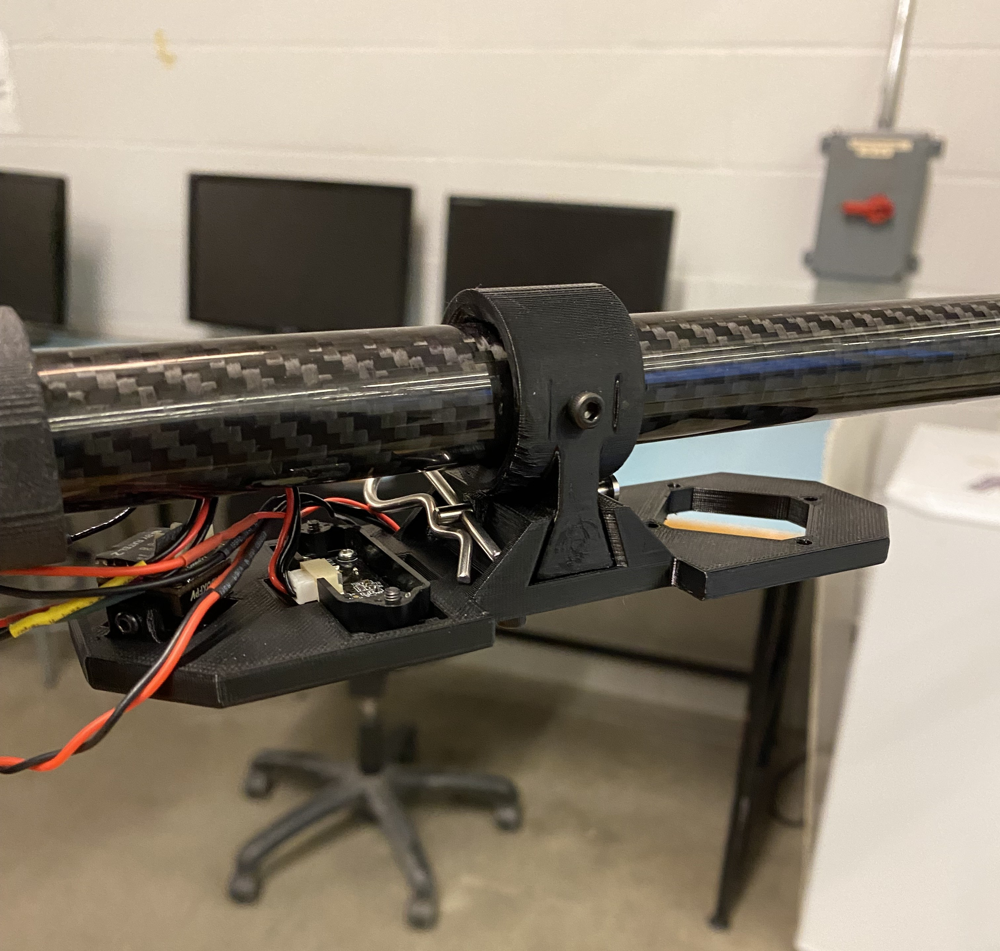
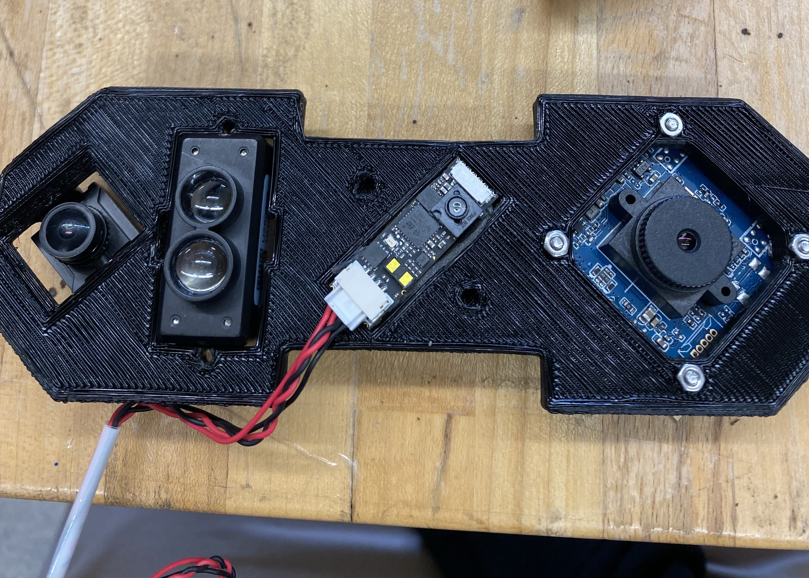
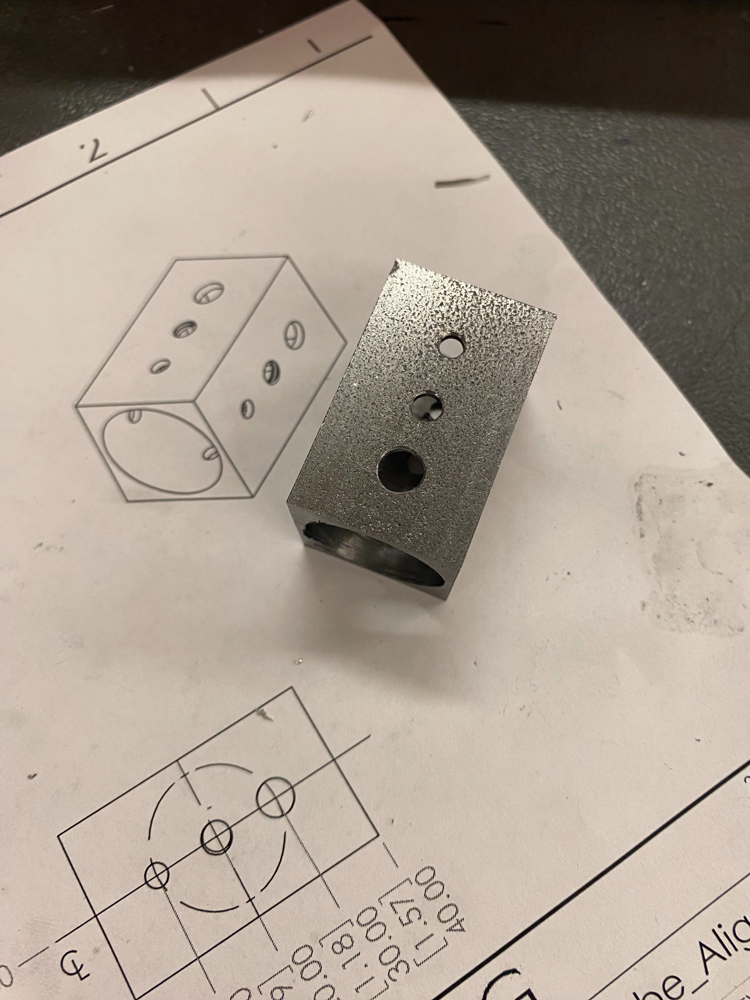
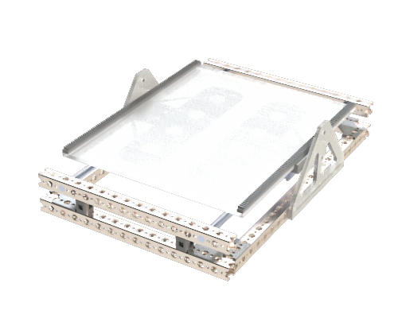
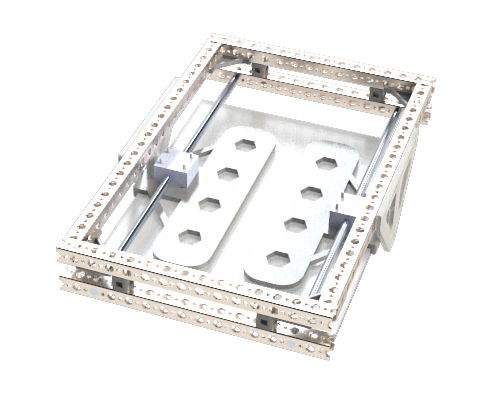
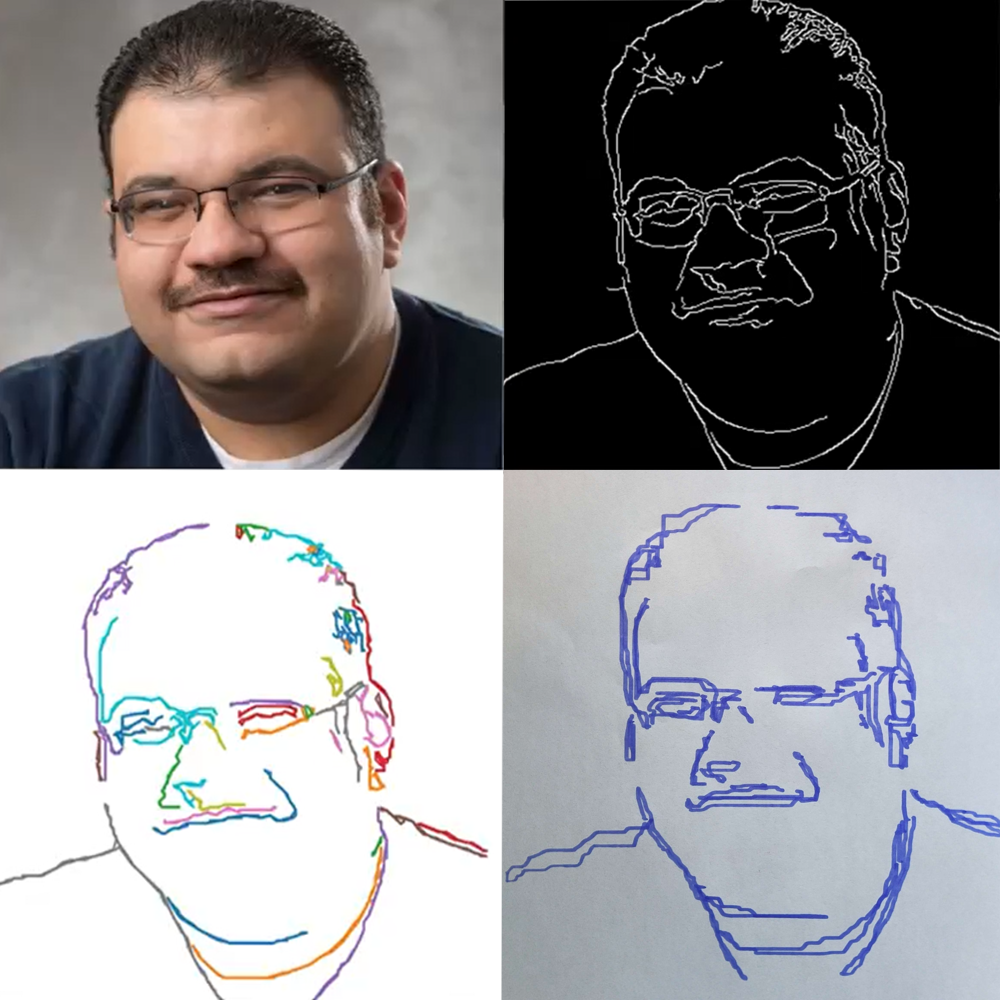
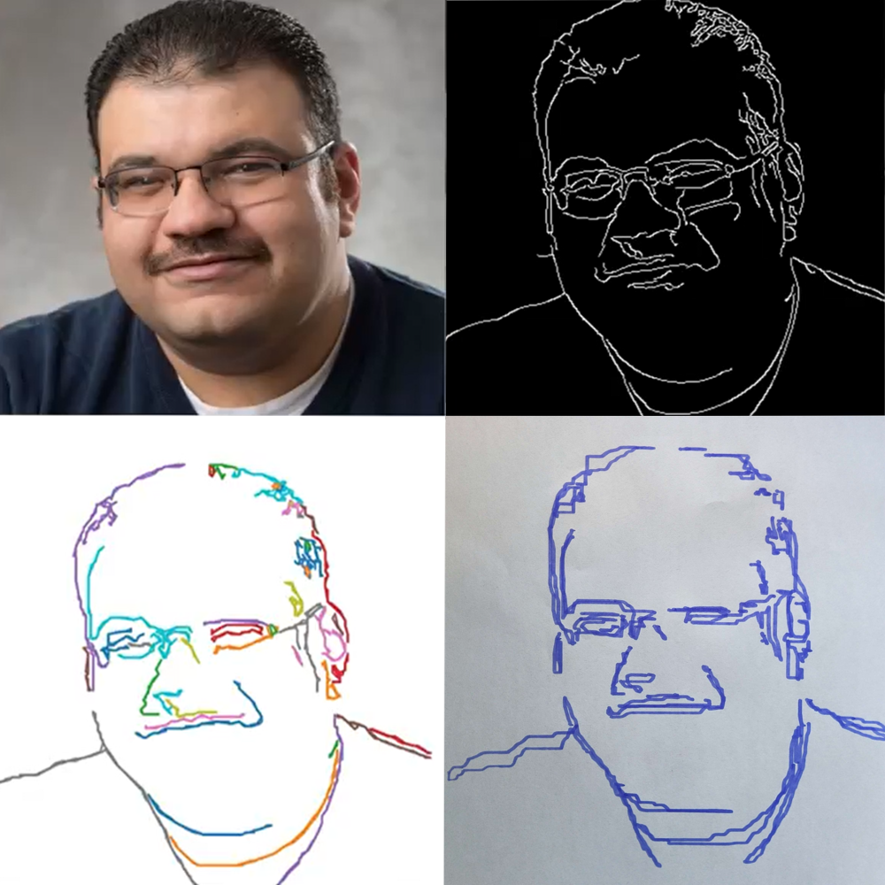

Project Pegasus
Pegasus is a 10 kg vertical-takeoff-and-landing aircraft produced by the Waterloo Aerial Robotics Group (WARG). The quadcopter placed #1 out of 12 other UAVs at the Aerial Evolution Association of Canada in 2024. I contributed to the mechanical design, manufacturing, and assembly of the airframe along with mounting hardware. I also represented the team at the 2024 competition (you can see me in the far left first row!).
Point Landing Gear
One of my first tasks in the team was to design a simple landing gear for the drone. I designed a vertical landing gear with 4 touch points. The landing legs are vertical to eliminate bending moments at the t-joint that could snap the joint. The t-joint is 3D printed using carbon fiber PETG filament for increased toughness. 10 mm diameter carbon fiber tubes are used for the legs to conserve weight. A small notch at the 3D printed joint is used to promote landing gear failure at the joint in the event of a crash to protect the carbon fiber tubes.

Monster Mount
The 'monster mount' is an integrated sensor mount that accomodates an optical flow sensor, a 1D lidar, a circuit board camera, and a downward facing FPV camera. The entire mount is secured to an arm of the drone using a dove-tail. This allows us to easily remove and reattach the mount when we need to remove the avionics during transportation or even when mounting the avionics. A clevis and cotter pin is used to lock the plate part of the mount. The mount was designed in SolidWorks, and was toleranced properly to ensure a tight dove-tail fit and also a tight fit around the carbon fiber tube arm to minimize vibrations.
 Manufacturing and Assembly
Besides designing, I also conducted multiple design review for other avionic and camera mounts. I also helped lead carbon fiber wet layups, and machining to construct the drone. Below is a tube drilling jig that I created on the mill. I also worked with mechanical tools like rachets and pliers to fasten the drone together, and also applied medium strength loctite so the bolts do not come off loose.
Articus Maximus
In my 1B term at university, we were challenged with designing a robot using EV3 parts to solve a problem. I, alongside my 3 friends, created a robot that executes drawing instructions to help mechanical engineers communicate design ideas with more clarity and ease. This solution was cheaper than using a printer which requires purchasing and replacing cartridges. Instead, with this robot anyone can use any writing tool like pen and pencil to sketch images.

Proper engineering process was used to define the scope of the project, brainstorm ideas, and collectively decide the most effective design approach. The need statement for this project was "a need exists to draw an image by moving a drawing instrument in the x, y, and z-axes while keeping production cost under $100 CAD." Throughout the process, the group performed and documented software and mechanical integration tests to ensure project timelines would be met and the goals would be achieved.
Base design and y-axis
The frame of the robot is constructed out of Tetrix Prime beams and connectors. The base frame is integrated with the y-axis because the sketching bed is actuated along the y-axis using a linear bearing. A rack-and-pinion mechanism is used to translate the sketching bed. The bed is supported by 2 aluminum rods and a linear bearing to ensure smooth sliding. An EV3 stepper motor and pinion gear is used to move the bed (both not shown in the image below). A rack gear was designed and 3D printed, and glued to the arcylic sketching platform. The sketching platform was lasercut. 2 custom mounting fixtures are designed to secure the sketching platform to the linear bearing shown in the underside view. The sketching platform is glued to the fixture. We also ran into the issue of misalignment of the rack gears not being perfectly parallel which limited the range of motion along the y-axis. I added a slot cut-out on the sketching platform where the rack gear would fix so that the rack gear can be glued accurately to the acrylic platform.
 Integration and User Interface
On the integration side, I involved in assembling the frame, mounting the stepper motors and proposing design solutions. We learned that integration is DIFFICULT. It is essential to start testing early on so that you can catch simple mistakes before they become too costly. Besides integration, I also wrote the Robot C software for the user interface in the EV3 brick which can be found here: github.com/Miekale/ArticusMaximus. Also check out the gif of the robot working, and a sketch of Professor Nassar!
 
